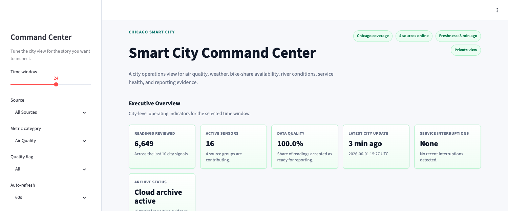
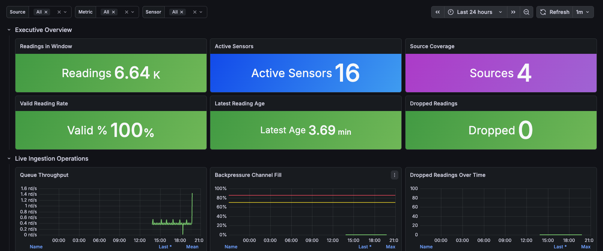

Phase 3 Final Report: Contents
Smart City Zero-Disk IoT Infrastructure · From detailed design to an operated, cloud-native data platform.
- Executive SummaryWhat was delivered, and the headline outcomes
- From Phase 2 to Phase 3Continuity, scope, and the design-to-delivery traceability matrix
- Delivery Approach & MethodologyIncremental vertical slices and validation gates
- Implemented Platform ArchitectureAs-built hot path, cold path, and runtime
- Live Data IngestionFive city signal families, validation, and backpressure
- Storage: Hot & ColdTimescaleDB, Parquet, GCS, and BigQuery
- Cloud Runtime & Infrastructure as CodeTerraform, GKE Autopilot, Workload Identity
- Release Engineering & CI/CDKeyless image publishing and gated promotion
- Reliability, Backups & RecoveryHealth checks, backups, and restore drills
- Cost Governance & Operational SafetyGuards, runtime modes, and budget control
- Reporting & VisualizationStreamlit command center and Grafana operations
- Data Quality & Observability in ProductionOperational quality, not exploratory analysis
- Safety, Privacy & SecurityPrivacy by design; keeping city data out of the wrong hands
- Verification & EvidenceAutomated checks, evidence artifacts, demo paths
- Business Impact & OutcomesPhase 2 civic use cases, now enabled
- Future Scope: AI Agents in Smart City IoTThe next layer above the data platform
- ConclusionProject close-out
- Appendix A: Automation CatalogGrouped Makefile targets
- Appendix B: Repository Map, Attributions & GlossaryWhere to find things; sources; terms
| Field | Detail |
|---|---|
| Document | Project Phase 3 Final Report (project close-out) |
| Project | Smart City Zero-Disk IoT Infrastructure · Project 4 · Group 4 |
| Course | MSDS 432: Foundations of Data Engineering, Northwestern University |
| Date | June 2026 |
| Companion artifacts | Phase 2 detailed-design report & presentation; Phase 3 presentation deck; Project_Phase_3_Group4.zip code submission |
| Status | Implementation complete and operated; AI-agent layer documented as future scope |
Phase 2 defined what to build and why. Phase 3 is the proof that it was actually built, deployed, and operated. The Smart City Zero-Disk IoT Infrastructure now ingests live telemetry from five real city signal families, normalizes and quality-checks every reading, serves a low-latency hot store and a low-cost cold archive, runs on a managed cloud runtime with automated releases, and surfaces insight through two complementary, access-protected dashboards.
What was delivered in Phase 3
- A working multi-source pipeline. Go services poll OpenAQ (air), Open-Meteo (weather), Divvy GBFS (mobility), and USGS (water), plus a deterministic simulator, all flowing through one normalized reading model.
- Validated, quality-flagged data. Every reading passes field, range, unit, coordinate, and freshness
checks and is tagged
valid,suspect, orinvalidbefore storage. - A dual hot/cold store. TimescaleDB is the indexed hot operational store with continuous aggregates; partitioned Parquet on Google Cloud Storage is queried as a zero-ETL BigQuery external table for history.
- A cloud runtime, as code. Terraform provisions Pub/Sub, GCS, BigQuery, Artifact Registry, and a GKE Autopilot cluster; self-hosted TimescaleDB stays the hot store inside the cluster.
- Automated, keyless releases. GitHub Actions builds and publishes images via OIDC, then a gated workflow promotes verified images to the runtime and checks its health.
- Operational maturity. Six-hourly backups, restore drills, hourly cold export, runtime health checks, explicit cost-control modes, and a reviewer-safe submission package.
- Two reporting surfaces. A polished Streamlit command center for executives and an enterprise Grafana operations dashboard for live monitoring.
The Phase 2 design has matured into a cloud-operated product. This report leads with delivery and operations, references the Phase 2 blueprint only where it adds continuity, and closes the project.
Phase 2 delivered a 34-page detailed design organized as six engineering questions: architecture selection (a hybrid-cloud data lake), a seven-layer architecture and device ecosystem, the data-integration and four-stage data-quality strategy, the technology-stack rationale, the database zones and table structures, and an executed exploratory data analysis with storage-and-cost modelling. That blueprint is not re-derived here. Phase 3 records what was built on top of it, and demonstrates that each design decision now has running evidence.
| Phase 2 design decision | Realized in Phase 3 as… |
|---|---|
| Hybrid-cloud data lake (hot + cold tiering) | TimescaleDB hot store + partitioned Parquet on GCS exposed as a BigQuery external table, both implemented and queried end-to-end. |
| Zero-disk mandate | State lives in managed services and object storage; the cluster keeps no node-local data, and cold history is schema-on-read Parquet. |
| Seven-layer architecture | Mapped 1:1 onto running components: sources, Go ingestion, hot store, cold store, query layer, orchestration, and dashboards (see §4). |
| Go ingestion microservice | services/ingestor with five source adapters under internal/, a shared reading model, and a backpressure buffer. |
| Schema-on-read Parquet on object storage | internal/coldstore writes Apache Arrow / Parquet partitioned by source / metric / year / month / day and uploads to GCS. |
| Four-stage data-quality strategy | Validation at ingest, quality_flag on every row, ingestion_metrics telemetry, and dashboard quality panels (see §12). |
| 72-hour hot window, cheap long-term retention | Hourly cold-export job and a GCS lifecycle rule; the Phase 2 cost case (~90% cheaper than warehouse storage) is now the operating model. |
| Tech stack: Go · TimescaleDB · Grafana · Streamlit · Docker | All implemented, and extended with Pub/Sub, GKE Autopilot, Terraform, and GitHub Actions CI/CD. |
| Reports identified during EDA | Operationalized as a live Grafana operations dashboard and a Streamlit command center (see §11). |
Architecture-selection rationale, the data-warehouse/data-mart comparison, the device-ecosystem catalog, the technology-choice justifications, and the exploratory data analysis all live in the Phase 2 detailed-design report. This report assumes them and focuses on implementation, operation, and outcomes.
The platform was built as a sequence of small, independently shippable vertical slices. Each slice moved a thin thread of value end-to-end, from a data source through storage to a dashboard, rather than building one layer at a time. A local-first stance meant every capability was proven on Docker Compose before any cloud spend, and only then promoted to a cloud-ready equivalent behind explicit safety gates.
Slice phases
Validation gates
No slice was considered done until it passed its gates and merged via pull request to main.
make check: repository scaffold integritymake test: Go unit testsdocker compose config: stack validitymake cloud-check/ci-cd-check: cloud scaffoldgit diff --check: whitespace hygiene- Live validation against the real source, store, or runtime
The CI workflow runs scaffold checks, Go tests, Compose validation, cloud-readiness checks, and a container image build on every push and pull request.
The result of disciplined slicing
A reviewer can reproduce the entire platform locally in five commands, and every cloud action is reversible and guarded, because each capability was first proven in isolation before it was wired into the whole.
The running system follows the Phase 2 seven-layer design. Data flows from city sources through Go ingestion into a hot path (Pub/Sub → hot writer → TimescaleDB) and, on a schedule, into a cold path (Parquet → GCS → BigQuery), with Grafana and Streamlit reading from both, all on a governed GKE Autopilot runtime.
Seven layers, mapped to running components
| Phase 2 layer | Implemented as | Where in the repository |
|---|---|---|
| 1 · Data sources | OpenAQ, Open-Meteo, Divvy GBFS, USGS, simulator | internal/{openaq,openmeteo,gbfs,usgs,simulator} |
| 2 · Go ingestion | Pollers, validation, quality flags, backpressure buffer, sinks | internal/{readings,buffer,cloudpubsub}, services/ingestor |
| 3A · Hot storage | TimescaleDB hypertable + continuous aggregate + metrics | internal/timescale, infra/local/timescaledb |
| 3B · Cold storage | Arrow/Parquet partitions uploaded to GCS | internal/coldstore, services/writer/cmd/export-cold |
| 4 · Query layer | BigQuery external table over GCS Parquet | infra/cloud/terraform |
| 5–6 · Orchestration | GKE workloads, CronJobs, CI/CD, Makefile lifecycle | infra/cloud/k8s, .github/workflows, Makefile |
| 7 · Dashboards | Grafana operations + Streamlit command center | infra/local/grafana, apps/streamlit |
No application state depends on node-local disk. Recent data lives in a managed hot store; history is schema-on-read Parquet objects in GCS; analytics run directly over those objects through BigQuery without an ETL copy.
Five sources publish into a single canonical reading model, so the rest of the platform never has to know which
city system a measurement came from. Each source adapter follows the same shape, client → normalize →
validate → publish, and emits the shared SensorReading contract.
| Source | Domain | Metrics produced | Sensor ID |
|---|---|---|---|
| OpenAQ v3 | Air quality | PM2.5, O₃, NO₂ | OPENAQ-… |
| Open-Meteo | Weather | temperature, humidity, wind speed, precipitation | OPENMETEO-… |
| Divvy GBFS | Mobility | bikes available, docks available, station capacity | GBFS-… |
| USGS | Water | river gage height | USGS-… |
| Simulator | Synthetic | PM2.5, O₃, NO₂, temperature, humidity | SIM-… |
One canonical reading
Every measurement becomes the same record before storage, with a deduplication key of
sensor_id | time | metric.
type SensorReading struct { Time, IngestedAt time.Time SensorID, Metric string Value float64 Unit, Source string Latitude, Longitude float64 QualityFlag int16 // −1 / 0 / 1 SchemaVersion int }
Quality flags
Validation runs at the boundary; a reading is never stored without a verdict.
Checks cover required fields, per-metric value ranges, expected units, coordinate bounds (±90° / ±180°), timestamp freshness, and a positive schema version.
The built-in simulator emits reproducible readings, so dashboards can be seeded and the whole pipeline exercised in CI without any external API calls.
Per-metric validation ranges
Range bounds are enforced in internal/readings/validation.go; values outside these
bounds are rejected or flagged rather than silently stored.
| Metric | Min | Max | Unit | Metric | Min | Max | Unit |
|---|---|---|---|---|---|---|---|
| PM2.5 | 0 | 1000 | ug/m3 | precipitation | 0 | 1000 | mm |
| O3 | 0 | 1 | ppm | bike_available_count | 0 | 1000 | count |
| NO2 | 0 | 1000 | ppb | dock_available_count | 0 | 1000 | count |
| temperature | −80 | 60 | C | station_capacity | 0 | 1000 | count |
| humidity | 0 | 100 | % | water_gage_height | −100 | 100 | ft |
| wind_speed | 0 | 400 | km/h |
Backpressure & the configurable sink
Readings pass through an in-memory buffer that batches by size or time and applies non-blocking
backpressure, if the channel is full, the reading is counted as dropped rather than blocking the producer.
The buffer continuously records pipeline health to ingestion_metrics.
- Channel
- capacity-bounded, non-blocking
- Batch
- flush on size or interval
- Metrics
- readings/sec, channel fill %, dropped total
- Shutdown
- drains in-flight readings on cancel
The same producer writes to one of two sinks, selected by configuration: local-first by default, cloud-native when ready.
- Local: buffer → TimescaleDB writer, for development and the reviewer demo.
- Pub/Sub: buffer → topic publisher, decoupling ingestion from storage in the cloud runtime.
- A dedicated consumer drains the subscription back into TimescaleDB (see §6).
| Package | Responsibility |
|---|---|
| readings | Canonical SensorReading model, validation, quality flags, dedup key |
| buffer | Backpressure queue, batching, and ingestion-metrics recording |
| openaq · openmeteo · gbfs · usgs | Source clients, pollers, and metric normalization |
| simulator | Deterministic reading generator for CI and demos |
| cloudpubsub | Pub/Sub publisher, consumer, and message codec |
| timescale | Batched, idempotent TimescaleDB writer and export reader |
| coldstore | Arrow/Parquet writer and GCS uploader |
The storage tier is the heart of the zero-disk design: a fast, indexed hot store for recent operational data, and a cheap, schema-on-read cold archive for everything else, each queryable in place.
Hot store: TimescaleDB
Readings land in a TimescaleDB hypertable keyed on (time, sensor_id, metric). Writes
are batched and idempotent (an ON CONFLICT upsert), so replays and Pub/Sub redelivery
never create duplicates. A continuous aggregate rolls valid readings into hourly statistics for fast dashboards,
and a metrics table captures pipeline health.
CREATE TABLE sensor_readings ( time TIMESTAMPTZ, sensor_id VARCHAR(64), metric VARCHAR(32), value DOUBLE PRECISION, unit VARCHAR(16), source VARCHAR(32), latitude DECIMAL(9,6), longitude DECIMAL(9,6), quality_flag SMALLINT DEFAULT 1, ingested_at TIMESTAMPTZ, schema_version INT, PRIMARY KEY (time, sensor_id, metric), CHECK (quality_flag IN (-1, 0, 1)) ); SELECT create_hypertable('sensor_readings', 'time'); -- hourly rollup of valid readings, for dashboards CREATE MATERIALIZED VIEW hourly_aggregates WITH (timescaledb.continuous) AS SELECT time_bucket('1 hour', time), sensor_id, metric, avg(value), min(value), max(value), count(*) FROM sensor_readings WHERE quality_flag = 1 GROUP BY 1,2,3;
- Indexes
(sensor_id, metric, time DESC)and(metric, time DESC)for sensor- and metric-oriented queries- ingestion_metrics
- readings/sec, channel fill %, Pub/Sub lag, GCS write latency, dropped total
- Idempotency
- upsert on the natural key absorbs retries and at-least-once delivery
Cold store: Parquet · GCS · BigQuery
An export job reads from TimescaleDB and writes Apache Arrow / Parquet files partitioned for efficient pruning, uploads them to a GCS bucket, and a BigQuery external table reads those objects directly: no import, no second copy.
# Parquet partition layout in GCS
sensor_readings/
source=openaq/
metric=PM2.5/
year=2026/month=06/day=02/
part-…Z.parquet
# BigQuery external table (Terraform) source_format = "PARQUET" source_uris = ["gs://…-cold/sensor_readings/*"] # 11-column schema mirrors the hot store
The export does not delete hot rows; the hot window ages naturally while the cold archive grows cheaply. A GCS lifecycle rule caps long-term retention. This is the Phase 2 cost case in production: object storage at roughly a tenth the cost of warehouse-resident storage, with analytics still one SQL query away.
The hot table, the cold Parquet schema, and the BigQuery external table all share the same eleven columns and the same quality semantics, so a query gives the same shape of answer whether it hits the last hour or last quarter.
The entire cloud footprint is declared in Terraform and rendered Kubernetes manifests: nothing is created by hand, and every cost-bearing apply is gated behind an explicit environment flag, so the project can sit at zero cost and be brought up reproducibly.
Terraform-provisioned resources
| Resource | Purpose | Gate |
|---|---|---|
| Pub/Sub topic + DLQ + subscription | Decoupled hot-path transport with a dead-letter policy and retry backoff | core |
| GCS bucket | Cold Parquet storage with a retention lifecycle rule | core |
| BigQuery dataset + external table | Zero-ETL analytics over the cold Parquet objects | core |
| Artifact Registry repository | Docker images for the ingestor, writer, and Streamlit services | core |
| Service accounts (×3) + IAM | Least-privilege identities for ingestor, writer, and analytics | core |
| GKE Autopilot cluster | The managed runtime, with Workload Identity enabled | runtime |
| Workload Identity pool + OIDC provider | Keyless GitHub Actions trust, restricted to main | ci/cd |
Region asia-south1 · APIs enabled via Terraform · applies gated by
ALLOW_TERRAFORM_APPLY_CORE and ALLOW_TERRAFORM_APPLY_RUNTIME.
Least-privilege identities
| Service account | Granted roles |
|---|---|
| ingestor | Pub/Sub Publisher |
| writer | Pub/Sub Subscriber · Storage Object Admin · BigQuery Data Editor |
| analytics | Storage Object Viewer · BigQuery Data Viewer · BigQuery Job User |
What runs on GKE
Kubernetes service accounts are bound to the GCP service accounts through Workload Identity, so pods authenticate without any service-account keys.
| Workload | Kind | Role |
|---|---|---|
| smartcity-ingestor | Deployment | Polls sources and publishes to Pub/Sub |
| smartcity-hot-writer | Deployment | Consumes the subscription into TimescaleDB |
| smartcity-streamlit | Deployment | The command center, optionally behind guarded ingress |
| smartcity-timescaledb | StatefulSet | Self-hosted hot store on a persistent volume |
| timescale-backup | CronJob · every 6h | Backs up the hot store to GCS |
| cold-export | CronJob · hourly | Tiers hot data to Parquet on GCS |
TimescaleDB stayed the hot store. Rather than switch to a managed cloud database, it runs inside the cluster as a StatefulSet, keeping the Phase 2 hot-store design intact while gaining a managed runtime around it.
Three GitHub Actions workflows take code from a pull request to a verified deployment without a human touching a credential or a cluster. Authentication is entirely keyless, via OpenID Connect federation into Google Cloud.
main: OIDC auth, then a matrix build that pushes ingestor, writer,
and Streamlit images tagged with the short SHA and latest-main.The pipeline uses GitHub OIDC federated into a Google Workload Identity pool, restricted by attribute condition
to this repository on the main branch. No service-account key files exist or are committed.
A platform that loses data is not operational. The runtime continuously protects the hot store, proves it can be restored, and tiers history off the cluster, all on automated schedules, validated rather than assumed.
| Control | What it does |
|---|---|
| Scheduled backup | A CronJob dumps TimescaleDB to GCS every six hours; make k8s-backup-once and k8s-backup-check trigger and verify it on demand. |
| Restore drill | make k8s-restore-test restores the latest backup into a throwaway namespace, k8s-restore-check validates it, and k8s-restore-clean tears it down: recovery is proven without touching production data. |
| Hourly cold export | A CronJob moves aged hot data to partitioned Parquet on GCS, bounding hot-store growth. |
| Runtime health checks | make runtime-health confirms rollouts, pod restarts, volume binding, subscription reachability, and recent backup/export freshness. |
| Dead-letter policy | Undeliverable Pub/Sub messages route to a dead-letter topic after bounded retries, so a poison message can never stall the pipeline. |
Both backup and cold-export are additive. Recovery workflows validate restorability in isolation, so a drill can run any time without risk to the live hot store.
Every cost-bearing action is opt-in. The default posture is zero spend; bringing the cloud up, exposing a demo, or running the runtime each requires an explicit flag, and each is reversible. Runtime modes make it cheap to keep the platform idle between reviews and to bring it back for a demo.
Apply guards
| Flag | Gates |
|---|---|
ALLOW_TERRAFORM_APPLY_CORE | Low-cost core resources |
ALLOW_TERRAFORM_APPLY_RUNTIME | The GKE runtime (the main cost driver) |
ALLOW_PUBLIC_INGRESS | Public Streamlit endpoint |
ALLOW_GRAFANA_PUBLIC_INGRESS | Public Grafana endpoint |
Runtime modes
| Mode | Effect |
|---|---|
| demo | Bring optional workloads up for a review window |
| idle | Suspend CronJobs and scale down optional pods |
| resume | Return from idle to running |
| scale‑down / up | Zero (or restore) optional pods, keeping TimescaleDB |
- Budget awareness. A cost guard refuses to proceed unless the budget is acknowledged, and a cost report summarizes active workloads, persistent-volume use, GCS footprint, and registry size.
- Evidence capture.
make runtime-evidencerecords a sanitized audit trail of runtime health and cost for the record (see §14). - Backend stays private. Only the chosen dashboard is ever exposed, and only behind a password and an explicit flag.
Two surfaces serve two audiences. Streamlit is a polished command center for executives and reviewers; Grafana is the live operations console for engineers. Both read the same stores, so the story they tell is consistent.


Streamlit command center
- Executive KPIs: readings, active sensors, valid %, throughput, drops
- Source operations: air, weather, mobility, and river telemetry
- Data quality, sensor-network maps, and cold-path evidence
Grafana operations (panel rows)
- Executive Overview & Live Ingestion Operations
- City Signal Domains: every metric, per domain
- Sensor Estate (geomap, freshness) & Data Quality
Where Phase 2 explored data quality analytically, Phase 3 enforces it continuously. Quality is a runtime property: every reading is judged at ingest, the verdict travels with the row, and pipeline health is observable in real time.
| Stage | What is enforced or observed |
|---|---|
| At ingest | Required fields, per-metric ranges, unit match, coordinate bounds, timestamp freshness, schema version |
| On the row | quality_flag of −1 / 0 / 1 stored alongside every reading; aggregates use valid rows only |
| Pipeline telemetry | ingestion_metrics records readings/sec, channel fill %, and dropped totals |
| Transport | Idempotent upsert absorbs redelivery; a dead-letter topic isolates undeliverable messages |
| In the dashboards | Quality-flag distribution, valid-rate by source, and a suspect/invalid table surface issues live |
The Phase 2 report analyzed sample data (descriptive statistics, diurnal patterns, outliers). This section is about the operational quality system that runs on every reading in production, a different concern, not a repeat.
Smart-city data is sensitive precisely because it describes a city and the people in it. In the wrong hands, fine-grained urban telemetry could enable surveillance, profiling, or targeting. The platform is therefore built so that the data it holds cannot be turned against residents, and so that access stays scarce, scoped, and revocable.
Privacy by design: what the platform deliberately does not collect
The strongest guardrail is structural: you cannot misuse data you never collect, so the reading model captures the city's environment, not its citizens.
Because the platform records environmental and aggregate signals rather than identities or movements, even a complete breach would expose city telemetry, not residents.
Keeping the data out of the wrong hands
Where data is held, access is treated as a scarce, audited privilege rather than a default.
- Private by default. Backend services and the database sit inside the cluster network; there is no public data API, and insight is shared as curated dashboards rather than bulk raw-data downloads.
- Opt-in, password-gated exposure. Any public surface requires an explicit flag and a non-default password, and can be removed again after use.
- Least privilege. Three scoped service accounts; the analytics identity is read-only, and no identity holds more access than its job needs.
- Keyless access and encryption. No credential files exist (GitHub OIDC and Workload Identity); Google-managed encryption protects data at rest and TLS protects it in transit to managed services.
- Bounded retention. A GCS lifecycle rule caps how long history is kept, so data does not accumulate indefinitely and long-term exposure stays small.
- Auditability. Cloud-native access logging and immutable cold objects make who-touched-what traceable.
Responsible use: civic, not coercive
The platform is scoped to civic-benefit use cases (public health, emergency response, planning) and surfaces aggregate insight rather than person-level output. Because cold history is environmental and aggregate, it can be shared with researchers through a read-only BigQuery or Parquet grant without exposing anyone. The planned AI-agent layer (see §16) is designed for policy-aware alert routing that respects these data-access and privacy boundaries, extending the existing least-privilege model with per-consumer scopes.
| Risk if the data were misused | How the platform prevents it |
|---|---|
| Surveillance or tracking of individuals | No personal data is collected; only environmental and station-level aggregates tied to fixed public sensors |
| Re-identification from location | Coordinates are public infrastructure sites, and there are no identity or device fields to join against |
| Bulk data exfiltration | No public data API, a private backend, dashboard-only insight, encryption at rest, and a read-only analytics identity |
| Credentials in the wrong hands | Keyless OIDC and Workload Identity, scoped least-privilege accounts, and opt-in password-gated exposure |
| Indefinite accumulation of history | A GCS lifecycle retention cap bounds how long any data is kept |
| Decisions driven by bad data | Validation and quality flags keep low-trust readings out of operational views |
Claims in this report are backed by repeatable checks and captured evidence. A reviewer can reproduce the whole platform locally, and the cloud runtime emits sanitized evidence of its own health and cost.
Automated checks
| Target | Validates |
|---|---|
make check | Repository scaffold |
make test | Go unit tests |
make cloud-check | Cloud scaffold (offline) |
make ci-cd-check | Workflow integrity |
make phase3-check | Submission safety |
Local reviewer path
make run-local
make seed-simulator
make poll-multisource-once
make grafana-demo-ready
make run-streamlit
# Grafana :3000 · Streamlit :8501
Five commands stand up the stack, seed deterministic data, pull one live multi-source poll, ready Grafana, and launch the command center.
Captured runtime evidence
The runtime produces timestamped, credential-free artifacts under artifacts/evidence/:
make phase3-package builds Project_Phase_3_Group4.zip from
tracked files only, excluding secrets, state, data, and generated evidence; phase3-package-list
prints its contents for a final pre-submission check.
The civic use cases identified in Phase 2 are no longer hypothetical: each is enabled by a capability that now exists and runs. The same platform serves real-time response and long-horizon analysis from one pipeline.
| Use case | Enabled by |
|---|---|
| Public-health air-quality alerts | Live OpenAQ PM2.5/NO₂ in the hot store with quality flags and Grafana threshold panels |
| Traffic / emission correlation | Air, weather, mobility, and water unified in one reading model and store |
| Smart urban planning | BigQuery analytics over months of partitioned Parquet history, at object-storage cost |
| Emergency-response optimization | Low-latency hot store plus live ingestion metrics for situational awareness |
| Environmental-compliance monitoring | A zero-ETL BigQuery audit trail over immutable cold objects |
| Predictive maintenance of sensors | ingestion_metrics, sensor-freshness, and dropped-reading observability |
| Energy optimization | Weather telemetry (Open-Meteo) ready to correlate with consumption signals |
| Academic / research access | Shareable Parquet on GCS and BigQuery external tables, zero-effort to grant |
Operational maturity is the outcome
Beyond features, the deliverable is a platform that can be deployed, observed, recovered, governed for cost, and handed over: the difference between a prototype and a product.
The data platform is the foundation an intelligent layer would stand on. With validated readings in the hot store and queryable history in BigQuery, AI agents become a natural next step, documented here as future scope.
AI-agent features are future scope. The platform's clean reading contract, dual stores, and least-privilege access model are deliberately agent-ready, so this layer can be added without re-architecting what exists.
The Smart City Zero-Disk IoT Infrastructure set out, in Phase 2, to be a production-minded data platform rather than an exercise. Phase 3 delivered exactly that.
Five live city signal families now flow through one validated, quality-flagged Go pipeline into a TimescaleDB hot store and a Parquet/GCS/BigQuery cold archive. The system runs on a GKE Autopilot runtime provisioned entirely as code, released through keyless CI/CD, protected by backups and proven restores, governed by explicit cost controls, and observed through two complementary dashboards, all reproducible locally and safe to submit.
The Phase 2 blueprint has become an operated product, with every design decision now backed by running evidence. The civic use cases that motivated the project are enabled, and a clean path to an AI-agent layer is open. This is the project's closing report.
From blueprint to operated product
Designed in Phase 2. Built, deployed, operated, and verified in Phase 3.
One Makefile with 100 targets drives the full lifecycle. The groups below summarize its
surface; make help lists every target.
Develop & demo
run-local,stop,grafana-demo-readyseed-simulator,poll-multisource-once,run-multisourcerun-streamlit,run-openaq
Checks
check,test,streamlit-checkcloud-check,ci-cd-check,phase3-check
Images & registry
docker-build,docker-smoke,docker-pushartifact-registry-create/check/list,ci-publish-check
Cold path
export-cold-demo,export-cold-gcs,cloud-cold-smoke,bigquery-cold-check
Terraform
terraform-init/validate/planterraform-apply-core,terraform-apply-runtime(gated)
Kubernetes runtime
k8s-render/apply/status/smoke/logsk8s-backup-once/check,k8s-restore-test/check/clean
Runtime ops & cost
runtime-health,runtime-promote-latest/sha,runtime-release-checkruntime-demo/idle/resume-mode,runtime-cost-report,runtime-evidence
Public demo (guarded)
public-demo-apply/url/smoke/disablegrafana-public-apply/url/disable
Packaging
phase3-package,phase3-package-list
Where to find things
- internal/
- Go packages: reading model, buffer, sources, stores
- services/
- ingestor & writer service entrypoints
- apps/streamlit/
- Command center app & modules
- infra/local/
- Docker Compose, TimescaleDB schema, Grafana
- infra/cloud/
- Terraform & Kubernetes manifests
- .github/workflows/
- CI, image publish, runtime promotion
- docs/design/
- Phase 2 detailed-design report
- docs/final/
- Phase 3 deck, this report, evidence
- docs/runbooks/
- Operational procedures
Data & image sources
Live data: OpenAQ v3 (air quality), Open-Meteo (weather), Divvy GBFS (bike share), and USGS (water) public APIs.
Cover and figure photography is drawn from Wikimedia Commons under public-domain, CC0, or
CC BY-SA dedications; dashboard images are project-owned screenshots with no secrets visible. Full
attributions are recorded in docs/final/presentation/assets/visual-sources.md.
Glossary
- Hypertable
- TimescaleDB time-partitioned table
- Continuous aggregate
- Auto-maintained rollup view
- Workload Identity
- Keyless pod-to-GCP auth
- OIDC federation
- Keyless CI auth via identity tokens
- External table
- BigQuery query over GCS files, no import
- Backpressure
- Bounded buffering that drops, not blocks
- DLQ
- Dead-letter topic for undeliverable messages
- Zero-disk
- No reliance on node-local persistent disk
Smart City Zero-Disk IoT Infrastructure · MSDS 432 · Group 4 · Northwestern University · Phase 3 Final Report · June 2026 · End of document.